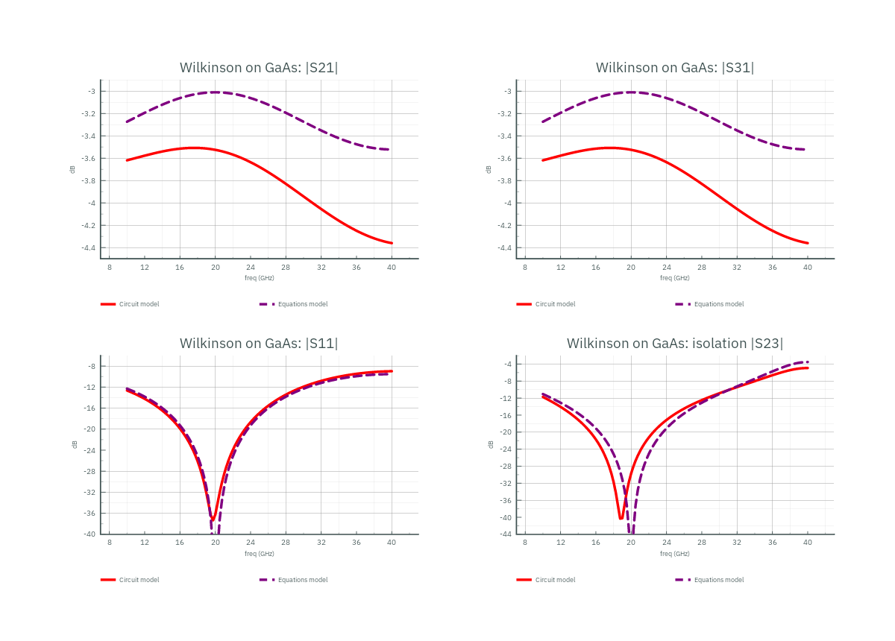

MMIC Wilkinson
A Wilkinson divider at 20 GHz on a 100 µm GaAs die, its isolation resistor a thin-film resistor across the ring's gap, laid out by Update Layout, its circuit model set beside an equations model of ideal lines.
File ▸ New ▸ Examples ▸ MMIC Wilkinson copies this workspace to a folder you choose and opens it on this README. Every example is listed in Example Workspaces.
The Wilkinson divider of the Dividers and Couplers example on a die: an MWPD at 20 GHz on the shipped GaAs stack, 100 µm
of GaAs under gold, with its isolation resistor a thin-film resistor (TFR). It is laid out by Update Layout from
Schematic, and a test bench sets its circuit model beside an equations model. The workspace's default technology is the
die's, tech/mmic-GaAs_2LM_100um.ctech.
The cells
| Cell | Views | What it is |
|---|---|---|
| Wilkinson | schematic, layout | A 0.5 mm input line, the MWPD, a TFR across R2-R3, and each output bending away through a 90° MCURVE of 0.35 mm radius and a 0.5 mm line to its port, all on Metal1 |
| Wilkinson Bench | schematic | The cell's circuit, and its equations model: ideal lines of the closed-form impedances and lengths, an ideal 100 Ω resistor, and each feed an ideal line of its own impedance and length at F |
Wilkinson Bench.cdd |
data display | |S21|, |S31|, |S11| and |S23|, the circuit model as a line and the equations model dashed |
Run it
Simulate Wilkinson Bench; Wilkinson Bench.cdd opens. No results ship.
Wilkinson
An MWPD with Z0 50 Ω, F 20 GHz and Gap 56 µm: the TFR's pin span, its 40 µm film and a contact at each end, so
Update Layout lays it straight across the ring's gap. The TFR is two 20 µm squares of the 50 Ω/sq film, 100 Ω. Every
line is on Metal1, the film's own metal, through SignalLayer; left empty it would be the top metal, Metal2. LVS matches
the layout to the schematic.

| At 20 GHz | Equations | Circuit |
|---|---|---|
| |S11| | below −100 dB | −36.7 dB |
| |S21| = |S31| | −3.01 dB | −3.53 dB |
| |S23| | below −100 dB | −33.1 dB |
The model loses 0.5 dB at 20 GHz in the 3 µm gold lines, and stays matched and isolated below −30 dB.